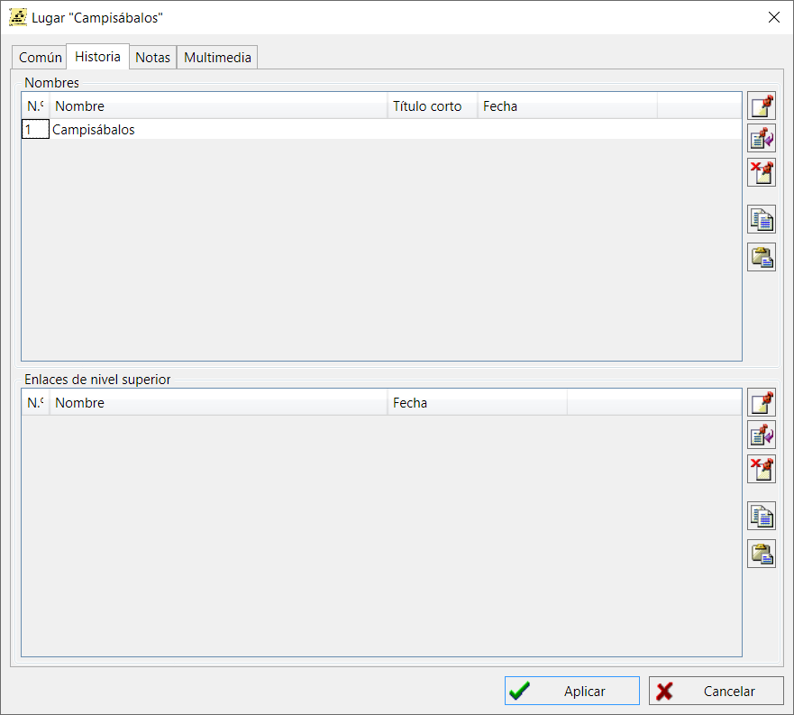
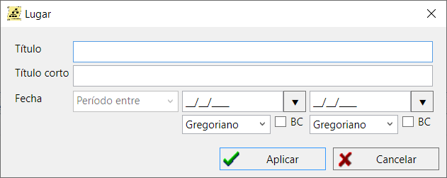
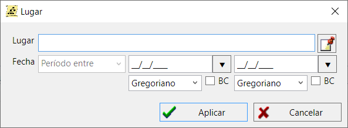

Los registros de localización geográfica son elementos del directorio único de localizaciones, donde cada localización tiene sus coordenadas. Cuando defina una ubicación para un evento/hecho en el registro de una persona y/o familia, puedes hacerlo sin hacer referencia al directorio de ubicaciones. Pero si quieres poder ver la ubicación en mapas geográficos en el futuro, tendrás que añadir un registro de ubicación al directorio de ubicaciones, encontrar un asentamiento en Google Maps y vincular las coordenadas de la ubicación.
Puedes añadir notas de texto u objetos multimedia (por ejemplo, una foto) a una localización geográfica.
Para asignar coordenadas a un lugar haz lo siguiente:
El botón "Mostrar" abre un pequeño mapa en la ubicación especificada.
En la pestaña "Localizaciones" de la ventana principal de trabajo hay una tabla unificadora que incluye todas las localizaciones disponibles en la base de datos. A la derecha de la tabla, un resumen de localidades muestra todos los eventos, relacionados con personas y familias, que se refieren a la localidad seleccionada.

Este diálogo está diseñado para introducir y gestionar información histórica sobre un lugar: vinculación de topónimos y enlaces a los niveles superiores de la jerarquía de divisiones administrativo-territoriales con el periodo de actuación. Es decir, si un determinado punto de población ha cambiado de nombre varias veces a lo largo de la historia, puede introducir todos los nombres en este cuadro de diálogo e indicar los intervalos de tiempo en los que estuvieron activos. Si un determinado pueblo o ciudad formó parte de diferentes distritos en distintos periodos, puede introducirse en la sección inferior del diálogo - «Enlaces de nivel superior».
Es posible utilizar distintos enfoques para mantener un directorio de lugares:
Nota: cuando se activa la opción «Opciones\Ubicaciones y Mapas\Lugares extendidos» y se conectan lugares organizados jerárquicamente a fechas en el diálogo de edición de eventos, los lugares comienzan a ajustarse automáticamente cuando cambia la fecha (se determina el nombre largo completo del lugar en una fecha específica del evento). Este mecanismo también funcionará al utilizar la herramienta de gestión de lugares y en la fase de verificación de los archivos cargados.

El cuadro de diálogo sirve para editar el nombre de un lugar y su periodo de validez. Por ejemplo: «Serenìsima Repùblega Vèneta», el período de validez del nombre de 697 a 12/05/1797

El diálogo está pensado para editar un enlace a un registro de un lugar y un periodo de subordinación de nivel superior. Por ejemplo, «Venèsia» formó parte de «Serenìsima Repùblega Vèneta» del 697 al 12/05/1797 y de «Kaiserthum Österreich» del 17/10/1797 al 15/03/1867.
Ejemplo de historial completo:

Ver también: Evento/hecho, Nota, Multimedia, Mapa.